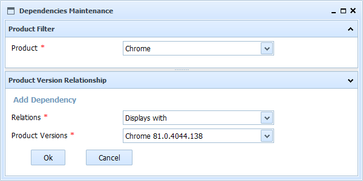

Help SMO Product Dependency Add
This form allows to add a new dependency of the current version of product. You must select, from the list of defined products, the product the current version depends on, the the kind of relationship and finally the exact version.
The fields to fill are:
- Product: Product from which the curent product AND version has some kind of relationship
- Relation: Kind of relationship between the current version of product and the related version of product (from the defined thesaurus of relations)
- Version: Version of product the current product depends on

In SMO Tree there is a complete view of operations and forms.